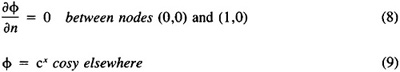
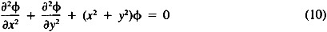

by Abraham Kandel
CRC Press, CRC Press LLC
ISBN: 084934297x Pub Date: 11/01/91
|
|
Fuzzy Expert Systems
by Abraham Kandel CRC Press, CRC Press LLC ISBN: 084934297x Pub Date: 11/01/91 |
| Previous | Table of Contents | Next |
Laplace’s equation with Dirichlet and homogeneous Neumann boundary conditions is solved over a domain D — a concave polygon — represented by an ordered list of its vertices (0,0), (1,0), (2,.6), (2,2), (.8,2), (.8,.8), (0,2.) and shown in Figure 3.
The fineness of the finite element grid is a parameter supplied by the user. Three grids — coarse, semifine, and fine — are presented by Figures 3A—C and consist of 8, 17, and 27 elements, respectively. Obviously, a finer mesh would provide a better approximation to the exact solution. The boundary conditions are Dirichlet, homogeneous Neumann, and mixed are denoted by D, H.N., M, respectively. The exact solution to Laplace’s equation given in Equations 8 and 9 is e cosy.
Figure 3 Concave polygon — various grids. (A) A coarse grid; (B) a semifine grid; (C) a fine grid.

Once the grid is determined by FIDES, its partial differential equation solver — MANFEP — approximates the exact solution using different polynomials over the various triangles. The degree of these polynomials is another parameter supplied by the user and should not exceed four.
A comparison between the three approximating solutions related to the various grids, using cubics and the exact solution, is given in Table 1.
The second-order partial differential equation:

is solved over the domain D (Figure 4) whose boundary is represented by the ordered list of points (2,0), (0,1), (0,.2), ( - 2.1,.2), ( - 2. 1,0), and (0,0). This domain is composed of the right upper quarter of the ellipsoid:
| (x,y) | Coarse | Semifine | Fine | Exact |
| (.5,0) | 1.64763 | 1.64880 | 1.64877 | 1.64872 |
| (.5,1) | 0.89059 | 0.89039 | 0.89079 | 0.89081 |
| (1,.5) | 2.38712 | 2.38616 | 2.38524 | 2.38532 |
Figure 4 A domain with a bottleneck.
and a long narrow rectangle attached to it at the bottleneck x = 0, 0 ≤ y ≤ .2.
Equation 10 is solved with the following boundary conditions:
FIDES recognizes the bottleneck near the origin (0,0) and separates D into two different sections, namely, a quarter of an ellipsoid and a long and narrow rectangle. It then replaces each section independently by a proper set of triangles, annexes them smoothly, and transfers the complete grid (Figure 4) to MANFEP.
In this example, second order polynomials are used to approximate the exact solution, cos(xy) and a comparison is given in Table 2.
Figure 5 shows the triangularization of a complex domain whose boundary is composed of straight and curved sections. The curved part consists of two parabolas, a circle, and an ellipsoid. In spite of the lack of any real bottleneck, FIDES is aware of the existence of almost closed subdomains as the circle of radius 1 centered at (5.0) and the ellipsoid with axes a = 2.32, b = 1.96 centered at (3,7). It replaces them separately and independently by their finite element grids, as it does to any other section. The complete net is then transferred to MANFEP.
| (x,y) | Numerical | Exact |
|---|---|---|
| (.5,.5) | 0.972 | 0.969 |
| (1,.5) | 0.884 | 0.878 |
| (0,.1) | 1.000 | 1.000 |
| ( - 1.1,.1) | 0.994 | 0.994 |
Figure 5 A complex domain triangularized by FIDES.
Research is partially supported by National Science Foundation Grant IST 8405953 and by Florida High Technology and Industrial Council Grant UPN 85100316.
| Previous | Table of Contents | Next |
){kind=link}
){kind=link}
){kind=link}